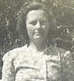
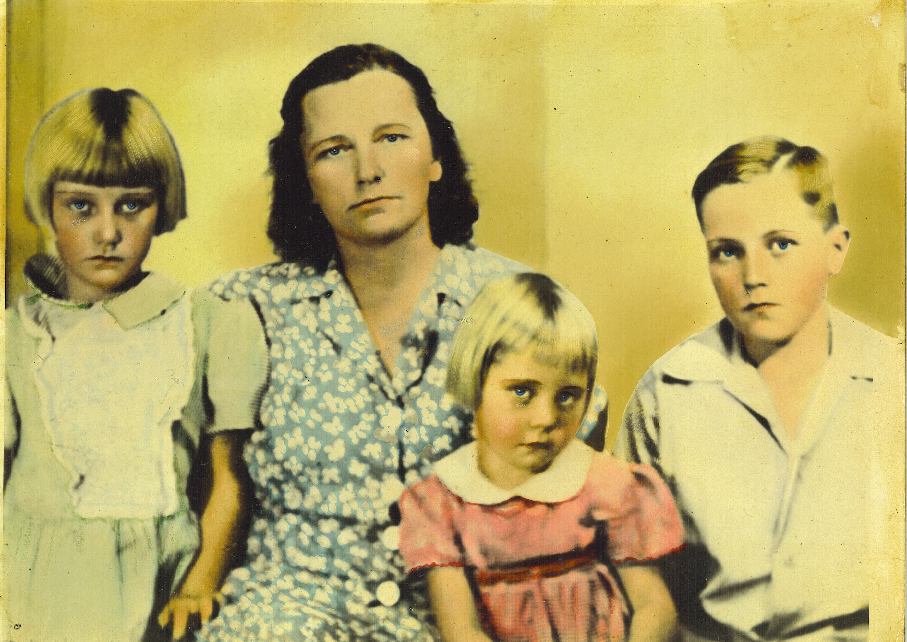
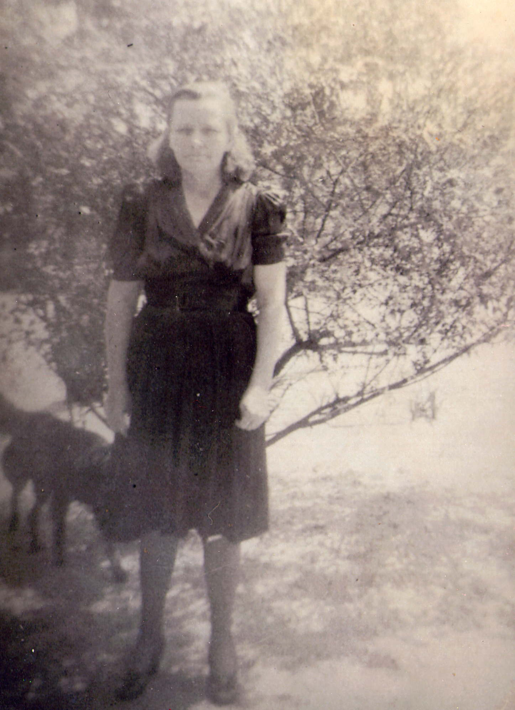
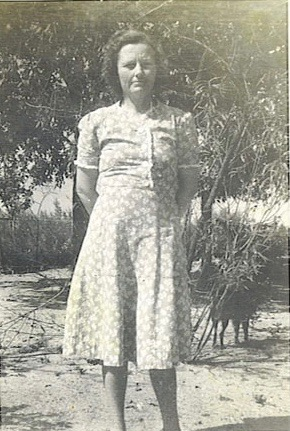
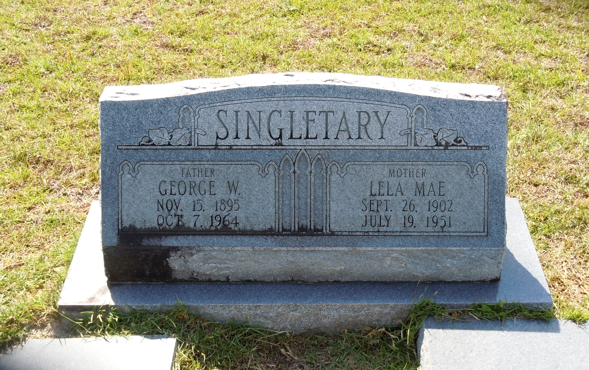

Lela Mae Mathis
1902–1951

Life Events
Born: September 26, 1902 — Madison County, Florida
Died: July 19, 1951 — Lafayette County, Florida
Family
Spouse: George William Singletary
Children
Military Service
No military service information has been added.
Biography
Biography information has not yet been added.
Photos



Grave & Burial

Airline Cemetery, Mayo, Lafayette County, Florida
Sources
-
Marriage License - G. W. Singletary and Lela May Mathis
Type: Marriage RecordMarriage license and return documenting the marriage of G. W. Singletary and Lela May Mathis. The license was issued in Lafayette County on March 5, 1917. The couple was married on March 6, 1917, and the record was filed on March 15, 1917. The record identifies the bride as "Lela May Mathis."
Location: Lafayette County, Florida, United States
Supports: Marriage of George William Singletary and Lela Mae Mathis on March 6, 1917, Marriage in Lafayette County, Florida, Contemporary record of Lela's name as Lela May Mathis
-
1920 United States Census - George W. Singletary Household
Type: CensusThe 1920 United States Census records George W. Singletary and his wife, Lela M. Singletary, living in Precinct No. 2, Mayo, Lafayette County, Florida. Their five-month-old son, Dewey, appears as "Duie" in the census. George's younger sisters Alice Geneva and Viola Singletary were also living in the household. The census page was enumerated on January 28 and 29, 1920.
Location: Precinct No. 2, Mayo, Lafayette County, Florida, United States
Household Members:
- Gorg W. Singletary - Head
- Lela M. Singletary - Wife
- Duie Singletary - Son - age 5/12
- Allice Singletary - Sister
- Viola Singletary - Sister
Supports: George William Singletary living in Lafayette County, Florida, in 1920, Lela Mae Mathis living as George William Singletary's wife, Dewey Singletary living as their five-month-old son, Alice Geneva Singletary living in George William Singletary's household as his sister, Viola Singletary living in George William Singletary's household as his sister
-
1930 United States Census - George W. Singletary Household
Type: CensusThe 1930 United States Census records George W. Singletary and his wife, Lela M. Singletary, living in Election Precinct No. 3, Lafayette County, Florida, with their children Dewey, Lewie, Loyd M., Irena, and George W. Lela's brother Glover Mathis appears in a nearby Mathis household on the same census page.
Location: Election Precinct No. 3, Lafayette County, Florida, United States
Household Members:
- George W. Singletary - Head - age 34
- Lela M. Singletary - Wife - age 27
- Dewey Singletary - Son - age 10
- Lewie Singletary - Daughter - age 8
- Loyd M. Singletary - Son - age 6
- Irena Singletary - Daughter - age 4
- George W. Singletary - Son - age 2
Supports: George William Singletary living in Lafayette County, Florida, in 1930, Lela Mae Mathis living as George William Singletary's wife in 1930, Lela Mae Mathis recorded as age 27 in 1930, Dewey Singletary living as a son in the household, George and Lela Singletary living with five children in 1930, Lela Mae Mathis's brother Glover Mathis living nearby
-
Florida Death Certificate - Lela Mae Singletary
Type: Death CertificateFlorida death certificate for Lela Mae Singletary, who died on July 19, 1951, in rural Mayo, Lafayette County, Florida. The certificate records her birthplace as Madison County, Florida, and identifies her parents as Daniel Mathis and Mary Darling. It records her birth date as September 26, 1905, and her age as 46. These two entries are internally inconsistent, and other family records support a birth date of September 26, 1902. The cause of death was recorded as acute gastritis. Lela was buried at Airline Cemetery in Lafayette County on July 20, 1951.
Location: Lafayette County, Florida, United States
Supports: Lela Mae Mathis Singletary's death on July 19, 1951, Lela Mae Mathis Singletary's birthplace as Madison County, Florida, Daniel Mathis as Lela Mae Mathis Singletary's father, Mary Darling as Lela Mae Mathis Singletary's mother, Lela Mae Mathis Singletary's burial at Airline Cemetery, Conflicting evidence concerning Lela Mae Mathis Singletary's birth year